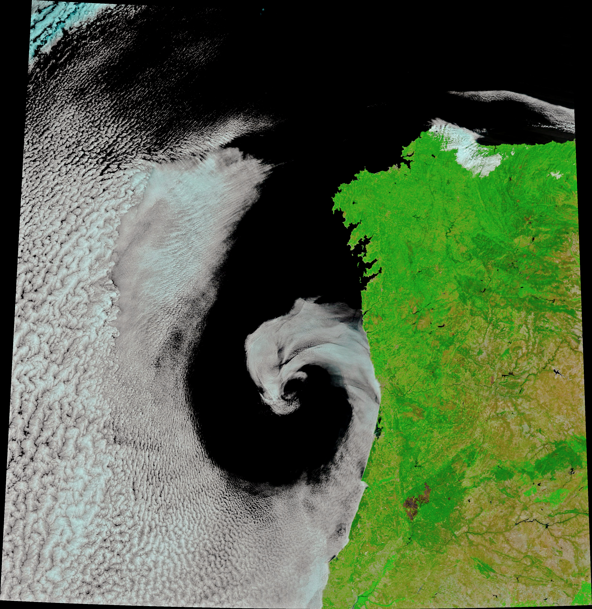

Research

WHO World Malaria Report 2024
Comprehensive annual assessment of malaria trends, interventions, and outcomes across Africa.
View Report →Research papers, datasets, and methodology documentation
Comprehensive annual assessment of malaria trends, interventions, and outcomes across Africa.
View Report →Peer-reviewed review of satellite-derived environmental indicators and their role in malaria risk modelling in sub-Saharan Africa.
Read Paper →
MOD11A1 daily LST product at 1 km resolution — a key input to the EOHA malaria risk model.
Access Data →
ESA Copernicus Sentinel-2 surface reflectance data used to derive NDWI water indices and habitat classification.
Access Data →Administrative level 1 province boundaries for geographic reference. These are not ward boundaries.
Download GeoJSON →How EOHA combines soil moisture, land surface temperature, NDWI, and population density into a composite malaria risk score.
Risk = SM(40) + LST(30) + NDWI(20) + PopDensity(10)
Forecasting requires a backend model and an endpoint returning forecast values. This feature remains unavailable until those are connected.
API integration pendingOpen-source mapping library powering the EOHA dashboard maps and heatmap overlays.
Documentation →